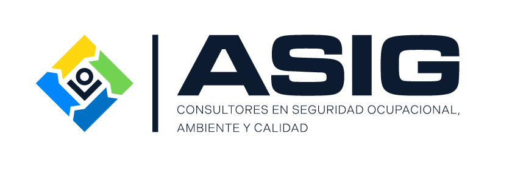

ASIG · Entrenamiento VR
Entrar en realidad mixta
Entrar en VR
Menú
Cargando…
Vista de escritorio: arrastre para mirar, rueda para acercar, clic para seleccionar. En el Quest, abra esta misma dirección en el navegador y entre en realidad mixta.